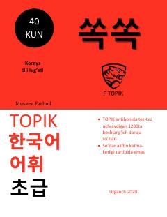

STTOPIK imtihoni uchun 1200 ta eng zarur koreyscha so'zlar to'plami.
Ushbu qo'llanma TOPIK imtihonida eng ko'p uchraydigan 1200 ta boshlang'ich darajadagi koreys tili so'zlarini o'z ichiga oladi. So'zlar o'zbek tilidagi tarjimalari bilan birga taqdim etilgan bo'lib, koreys tilini o'rganuvchilar uchun lug'at boyligini oshirishga mo'ljallangan.